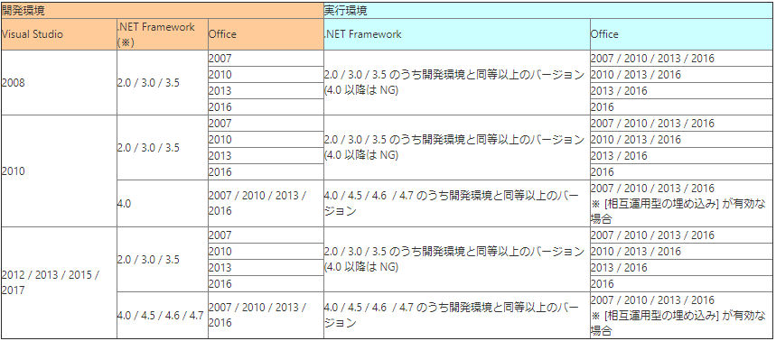
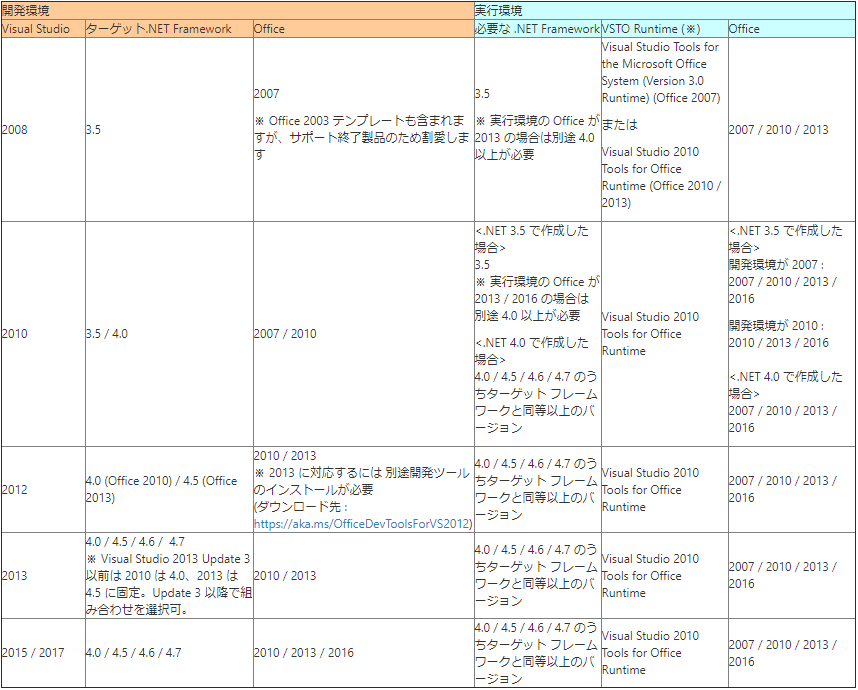

(※ 2017 年 2 月 7 日に Japan Office Developer Support Blog に公開した情報のアーカイブです。)
こんにちは、Office 開発 サポート チームの中村です。
今回は、C# や VB.NET を使って .NET Framework 上で動作する Office をオートメーションするプログラムや、VSTO でOffice ソリューション (アドインや、プログラムが組み込まれた Office ファイル) を作成するときに必要な環境構成について記載します。
過去の投稿で、当時の製品でのバージョン選定について記載していましたが、古い情報になってしまいましたので、本記事では、現在サポートされる製品バージョンについての最新情報を記載したいと思います。動作の仕組みの説明などは、過去の投稿で詳しく説明していますのでぜひ合わせてご参照ください。
2017/7/14 Update
Visual Studio 2017 と .NET Framework 4.7 の情報を追記しました。
2018/1/16 Update
「表2. VSTO 開発環境の組み合わせ」の実行環境で利用される VSTO Runtime と Office のバージョンの組み合わせを表内に追記しました。
目次
1. 導入 – 開発環境に必要なもの
2. Office オートメーションの場合
3. VSTO ソリューションの場合
4. その他構成に関する注意点
5. 参考資料
1. 導入 – 開発環境に必要なもの
.NET Framework 上で動作する Office をオートメーションするプログラムや VSTOを開発する際、開発環境に必要な製品は、以前から変わりなく以下の 4 点です。
- Visual Studio
- .NET Framework
- Office
- Office Primary Interop Assembly (PIA) ※ PIA は、通常、Officeと一緒にインストールされますので、あまり意識する必要はありません。
これらの製品の組み合わせとして、どのような組み合わせを選ぶことができるのかを以下にご案内します。
2. Office オートメーションの場合
まずは、Office を外部からオートメーションするとき (例えば、Windows フォームアプリケーションを作成して、フォーム上のボタンを押下すると Office アプリケーションを起動して処理を行う、といったプログラム) の開発環境について記載します。.NET Framework 上で動作するプログラムでは、Office PIA (Microsoft.Office.Interop.Excel 等のアセンブリのことです) への参照を追加することで、公開された COM オブジェクトを利用して Office をオートメーションできます。
このような場合に、開発環境として選択できる構成は下表のとおりです。
表1. Office オートメーション開発環境の組み合わせ

※ 初期状態ではターゲットできない .NET Framework バージョンもあります。その場合は、以下のリンクから必要な Developer pack をインストールしてください。
タイトル : Targeting .NET Platforms
アドレス : https://www.microsoft.com/net/targeting
補足) Office PIA の要否
表に示すとおり、.NET Framework 3.5 以前と 4.0 以降で、実行環境で利用可能な Office バージョンが異なります。これは、Office PIA について以下のように動作が変更されたためです。
.NET Frameowork 3.5 以前は、Office PIA を実行環境でも参照できる必要がありました。Office PIA には上位互換性はありますが、下位互換性がありません。このため、実行環境で Office PIA を参照できるよう、実行環境の Office バージョンと同等または下位の Office バージョンで開発する必要がありました。(例: 実行環境が Office 2010 であれば、開発環境は Office 2010 または Office 2007 で作成します。開発環境に Office 2013 や Office 2016 を使用すると、実行環境で Office PIA が参照できず実行できません。)
一方、.NET Framework 4.0 以降では、既定で Office PIA の情報はビルド時にソリューションに埋め込まれるようになりました ([相互運用型の埋め込み] プロパティが True の場合)。このため、実行環境に Office PIA が必要ないので、開発環境より下位バージョンの Office でも動作させることができます。 (例: Office 2016 環境で開発したプログラムを、Office 2010 環境で実行できます。) なお、.NET Framework 4.0 以降でも、[相互運用型の埋め込み] を無効にしたり、以前の Office には存在しない機能を利用した場合は、古いバージョンの Office では動作しませんのでご注意ください。
また、下位バージョンで存在した機能が上位バージョンで利用できないことは多くはありませんが、様々な理由により一部機能が削除・動作変更されることもありますので、この場合には上位互換性も保証されません。これを考慮すると、.NET Framework 4.0 以降であっても、実行環境と同等または下位の Office バージョンで開発することをお勧めします。
3. VSTO ソリューションの場合
VSTO のテンプレート等を含む開発ツールは、Visual Studio に含まれる Office 開発ツール (Microsoft Office Developer Tools) によってインストールされます。このため、Visual Studio のバージョンと Office バージョンの組み合わせに厳密な制限があります。また、プロジェクトがターゲットする .NET Framework も厳密に決められています。さらに、実行環境には VSTO のランタイムが必要になります。
以下の表に従って、開発環境を選定してください。
表2. VSTO 開発環境の組み合わせ

※ VSTO Runtime は Office に同梱されていますが、以下より最新版をダウンロードできますので可能な限り最新版をご利用ください。
タイトル : Visual Studio 2010 Tools for Office Runtime
アドレス : https://www.microsoft.com/en-us/download/details.aspx?id=54251
* 2017/2/7 時点最新バージョン : 10.0.60825
補足) 他の考慮事項
Office PIA や Office 機能の互換性については、2. と同様ですので、実行環境と同等または下位の Office バージョンで開発することをお勧めします。
ただし、本記事では詳しい説明は省略しますが、VSTOマニフェストへの署名に利用する証明書を SHA-256 アルゴリズムで暗号化する場合は、Visual Studio 2013 Update 3 以降を利用し、ターゲット フレームワークに .NET Framework 4.5 以降を指定する必要があります。
4. その他構成に関する注意点
過去の投稿と同様、最新バージョンにおいても、開発環境においては複数バージョンの Office が混在する環境はサポートしていません。
また、開発環境にクイック実行で提供される Office 2010 を利用することはサポートされません。Office 2013 以降のクイック実行提供版は開発環境で利用可能です。
5. 参考資料
このブログ記事の内容は、以下の資料などを基に記述しています。
タイトル : 異なるバージョンの Microsoft Office でのソリューションの実行
アドレス : https://msdn.microsoft.com/ja-jp/library/bb772080.aspx
タイトル : Office ソリューションを開発できるようにコンピューターを構成する
アドレス : https://msdn.microsoft.com/ja-jp/library/bb398242.aspx
タイトル : 方法 : Office のプライマリ相互運用機能アセンブリをインストールする
アドレス : http://msdn.microsoft.com/ja-jp/library/kh3965hw.aspx
タイトル : 方法 : プライマリ相互運用機能アセンブリを利用して Office アプリケーションを使用する
アドレス : https://msdn.microsoft.com/ja-jp/library/dww0e04a.aspx
今回の投稿は以上です。
本情報の内容 (添付文書、リンク先などを含む) は、作成日時点でのものであり、予告なく変更される場合があります。